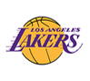

<!DOCTYPE html>
<html>
<meta charset="utf-8" />
<meta http-equiv="X-UA-Compatible" content="IE=edge,chrome=1" />
<meta name="author" content="m.9188.com  ">
<meta name="viewport" content="width=device-width, initial-scale=1.0, maximum-scale=1.0, user-scalable=no" />
<meta name="apple-mobile-web-app-capable" content="yes" />
<meta name="apple-mobile-web-app-status-bar-style" content="black" />
<meta name="format-detection" content="telephone=no" />
<meta name="msapplication-tap-highlight" content="no">
<meta http-equiv="cleartype" content="on">
<link href="css/nba.css" rel="stylesheet">
<script type="text/javascript" src="js/jquery-1.8.3.min.js"></script>
<script type="text/javascript" src="js/index.js"></script>
<title>新赛季NBA常规赛</title>
</html>
<body>
<section class="wrap"> 
		<div class="info_div">
				<p>新赛季NBA常规赛将在北京时间10月26日早8点正式打响，本文可以帮您在最短的时间掌握最多的干货然后投入到新赛季的买彩征程。</p>
		</div>
		<!--赔率分析-->
		<div class="title_div"></div>
		<div class="analysis_box">
				<p>新赛季任意两球队之间硬实力差距究竟有多大这个问题分两种情况介绍，一张新赛季总冠军赔率图可以帮您在最短的时间对球队实力变化有一个粗略的了解，图中赔率越低的球队实力越强：</p>
				<ul class="analysis_ul clearfix">
						<!--1-->
						<li><span>勇士<i>1.80</i></span></li>
						<li><span>骑士<i>4.50</i></span></li>
						<li><span>马刺<i>9.00</i></span></li>
						<!--2-->
						<li><span>凯尔特人<i>21.00</i></span></li>
						<li><span>快船<i>26.00</i></span></li>
						<li><span>雷霆<i>36.00</i></span></li>
						<!--3-->
						<li><span>猛龙<i>36.00</i></span></li>
						<li><span>老鹰<i>36.00</i></span></li>
						<li><span>公牛<i>41.00</i></span></li>
						<!--4-->
						<li><span>步行者<i>41.00</i></span></li>
						<li><span>尼克斯<i>41.00</i></span></li>
						<li><span>爵士<i>61.00</i></span></li>
						<!--5-->
						<li><span>灰熊<i>61.00</i></span></li>
						<li><span>森林狼<i>61.00</i></span></li>
						<li><span>鹧鸪<i>67.00</i></span></li>
						<!--6-->
						<li><span>奇才<i>67.00</i></span></li>
						<li><span>开拓者<i>67.00</i></span></li>
						<li><span>热火<i>67.00</i></span></li>
						<!--7-->
						<li><span>火箭<i>81.00</i></span></li>
						<li><span>活塞<i>101.00</i></span></li>
						<li><span>小牛<i>101.00</i></span></li>
						<!--8-->
						<li><span>雄鹿<i>101.00</i></span></li>
						<li><span>魔术<i>126.00</i></span></li>
						<li><span>湖人<i>151.00</i></span></li>
						<!--9-->
						<li><span>黄蜂<i>151.00</i></span></li>
						<li><span>掘金<i>151.00</i></span></li>
						<li><span>国王<i>201.00</i></span></li>
						<!--10-->
						<li><span>76人<i>251.00</i></span></li>
						<li><span>太阳<i>401.00</i></span></li>
						<li><span>篮网<i>501.00</i></span></li>
				</ul>
				<p>可以看出许多球队的实力跟我们上赛季的印象发生了较大变化，如尼克斯，凯尔特人，森林狼，鹈鹕的实力定位都变强了，太阳和篮网走上重建之路，另外两个大区中游球队变多对季后赛席位的争夺也会变得更激烈。需要注意的是，由于NBA赛制问题，从常规赛进入到季后赛并得到大区冠军面临的竞争不同，总冠军赔率是考虑到这方面因素后经过复杂运算得出的赔率，因此如果把上图当成实力值比较两个不同大区的球队时，要把西部球队数值调低一些（不同分区两队总冠军赔率相同则西部球队实力强一些，不包括勇士），以得到更精确的结论。</p>
		</div>
		<!--球队分析-->
		<div class="title_div"></div>
		<ul class="team_ul clearfix c4" id='tu'>
				<!--1-->
				<li ab='ab'><a class="yongshi">
						<div class="cur"></div>
						<i class="cur"></i></a></li><!--勇士 西部 1-->
				<li><a class="qishi">
						<div></div>
						<i></i></a></li><!--骑士 东部1-->
				<li><a class="huren">
						<div></div>
						<i></i></a></li><!--湖人 西部15-->
				<li><a class="huojian">
						<div></div>
						<i></i></a></li><!--火箭 西部8-->
				<li><a class="maci">
						<div></div>
						<i></i></a></li><!--马刺 西部2-->
				<!--2-->
				<li><a class="leiting">
						<div></div>
						<i></i></a></li><!--雷霆 西部3-->
				<li><a class="kuaichuan">
						<div></div>
						<i></i></a></li><!--快船 西部4-->
				<li><a class="nike">
						<div></div>
						<i></i></a></li><!--尼克斯 东部14-->
				<li class="more_li"><a href="team.html" class="more_a">查看全部</a></li>
		</ul>
		<!--勇士 西部 1-->
		<div id="yongshi" class="team_info tea_i">
				<p class="title_p">勇士 上赛季常规赛73胜9负</p>
				<p>勇士---新赛季勇士可以说是众矢之的，每个球队都会针对他们进行布阵。其实这支球队目前来说阵容上只有一个缺点，就是护框能力。球队连续失去了最好的两个护框手，补充的帕楚利亚是顶防一段时间还不错，但完全无法护框的地板流内线。球队必须要在外线和中距离把对手完全限制死，一旦对手有机会杀入篮下终结，球队将毫无办法。但好在勇士账面上还真是仅有的几只可能做到把对手限制在三秒区以外的球队，球队外线防守高手不少，杜兰特和格林又是上赛季内线协防最优秀的两个侧翼球员。总而言之，杜兰特来了，虽然勇士失去了几个不错的角色球员，但是新赛季还没开打他们就已经没有退路，目标只有总冠军。</p>
				<p>重要引进 重要引进：凯文-杜兰特（2年5430万，转自雷霆），扎扎-帕楚里亚（1年290万，转自小牛），大卫-韦斯特（1年155万，转自马刺）</p>
				<p>重要流失：哈里森-巴恩斯（4年9400万加盟小牛），安德鲁-博格特（交易至小牛）布兰登-拉什（1年350万加盟森林狼），费斯图斯-艾泽利（2年1600万加盟开拓者），莱昂德罗-巴博萨（2年800万加盟太阳），马利斯-斯贝茨（一年底薪加盟快船）</p>
		</div>
		<!--骑士 东部1-->
		<div id="qishi" class="team_info tea_i">
				<p class="title_p">骑士 上赛季常规赛57胜25负</p>
				<p>除了薪水关系离队的德拉维多瓦和莫兹戈夫之外，骑士基本保留了核心阵容，新赛季球队的目标依然是卫冕，但这卫冕之路说来容易其实也很麻烦，对面勇马并没有削弱，自己的核心又老了一岁。好在东部的对手虽然补强了，但还是没有任何一支球队能威胁到骑士，而且骑士引进了邓利维和安德森，邓利维虽然慢，但好歹球商出众，球队肯定是希望他能仗着他的球商串联起第二阵容的，安德森在骑士季后赛扶正TT弱化了莫兹戈夫之后的这种体系中能基本弥补莫兹戈夫的作用。新赛季骑士只要延续上赛季的节奏，让全员健康的状态进入季后赛，依然是总冠军热门球队之一。詹姆斯的历史地位如何，让我们一起来见证。</p>
				<p>重要引进：迈克-邓利维（交易自公牛），克里斯-安德森（转自灰熊）</p>
				<p>重要流失：蒂莫菲-莫兹戈夫（4年6400万加盟湖人），德拉维多瓦（4年3850万签雄鹿）</p>
		</div>
		<!--湖人 西部15-->
		<div id="huren" class="team_info tea_i">
				<p class="title_p">湖人 上赛季常规赛17胜65负</p>
				<p>湖人管理层对于球队的态度应该还是处于没有战绩要求的缓冲期。首先，湖人本赛季的选秀权留不住，那么战绩打成什么样，都无所谓。其次，湖人的年轻球员也需要磨练，拉塞尔、克拉克森、英格拉姆、兰德尔、小南斯这湖人五少能否磨合默契，还需要时间检验。第三，小沃顿也与球队有磨合的诉求，他从金州勇士学来的战术体系，能否在湖人成功移植，实在令人捏一把汗，毕竟湖人的三分球太差了，位列联盟垫底，而勇士则是全联盟三分球能力最出色的球队。没有三分球拉空间，沃顿该怎么用五小阵容呢？</p>
				<p>重要流失：罗伊-希伯特（1年500万加盟黄蜂），布兰顿-巴斯（1年期老将底薪加盟快船），科比-布莱恩特（退役）</p>
				<p>重要引进：鲁尔-邓（4年7200万，转自热火），蒂莫菲-莫兹戈夫（4年6400万，转自骑士）</p>
		</div>
		<!--火箭 西部8-->
		<div id="huojian" class="team_info tea_i">
				<p class="title_p">火箭 上赛季常规赛41胜41负</p>
				<p>德安东尼的到来引人瞩目，业界看好他和哈登的合作，过往成功的履历和独树一帜的打法，也使他具备增强火箭对自由球员吸引力的可能。新赛季的火箭，兵源充足，多数球员皆有闪光点，内部有挖潜可能，以及哈登和德安东尼，都堪称优势，除此之外火箭也有不少X因素，德安东尼治下球队强调精确制导传球，火箭则难免始于哈登终于哈登，其中侧翼薄弱，无法起到串联作用将成为德安东尼战术施行的桎梏。这也为鲁迪-盖伊可能加盟，以及莫泰可能的留队埋下伏笔。毕竟盖伊相比特雷沃-阿里扎和科里-布鲁尔而言是升级，莫泰的低位进攻和策应，也是后魔兽时代火箭内线所稀缺的。 新赛季打入季后赛是最起码的要求，能否打出观赏性和高期望，则决定着火箭明夏的成败。</p>
				<p>重要流失：德怀特-霍华德（老鹰）、泰伦斯-琼斯（鹈鹕）、迈克尔-比斯利（交易，送往雄鹿）、杰森-特里（雄鹿）、多纳塔斯-莫泰尤纳斯（自由球员）</p>
				<p>重要引进：哈登（续约，4年1.18亿）、莱恩-安德森（4年8000万）、埃里克-戈登（4年5289万）、内内（1年290万）、巴勃罗-普里吉奥尼（2年223万）、泰勒-恩尼斯（交易，年薪173万）、齐纳努-奥纳库（37顺位，3年250万）、周琦（43顺位，今年不签约）</p>
		</div>
		<!--马刺 西部2-->
		<div id="maci" class="team_info tea_i">
				<p class="title_p">马刺 上赛季常规赛67胜15负</p>
				<p>新赛季，马刺肯定还是要争冠的，他们会重回巨星模式，用双德带动一群优质球员打球。加索尔、阿德、卡哇伊、格林、帕克的主力阵容，全联盟除了勇士其他对手很难和其对抗。替补席上随时还有吉诺比利，米尔斯，安德森等人随时驰援，球队虽然折了邓肯防守下滑是可以遇见的。但核心阵容的天赋和波波的调教我依然觉得马刺的进攻防守都会稳定在联盟前5。马刺就像是一个冠军的试金石，他的超级球星是文艺技术流，不是运动能力变态的怪兽。但强就强在整个队伍攻防稳定，抓对手弱点极其致命。新赛季各个球队都可以在马刺身上试一试自己的弱点在哪，能否藏起来，不然等真到季后赛面对他们时，不像上赛季雷霆那般突然开窍，是真没得打。</p>
				<p>重要引进：保罗-加索尔（2年超3000万，转自公牛），马努-吉诺比利（1年合同续约），大卫-李（2年320万，转自小牛）</p>
				<p>重要流失：大卫-韦斯特（1年129万加盟勇士），鲍里斯-迪奥（交易至爵士），蒂姆-邓肯（退役）</p>
		</div>
		<!--雷霆 西部3-->
		<div id="leiting" class="team_info tea_i">
				<p class="title_p">雷霆 上赛季常规赛55胜27负</p>
				<p>新赛季，球队肯定是主打威少加双塔的。只要防守篮板稍弱的队，会被他们的2次进攻刷爆，而且雷霆双塔是有持球主攻的能力的。坎特在篮下各种反手上篮堪称一绝，亚当斯的小抛投也越来越准。威少作为全NBA体能最劲爆的超人，开发进攻机会的能力联盟无人能及，他的传球也越来越能带动队友。想想对面要在场上不时面对胡子兄弟和威少的冲击就够累了。奥拉迪波的投篮虽缺乏稳定性，但持球挂挡拆后冲击篮下的能力并不比威少差多少。球队后场有两个体能超人对面是很痛苦的。球队的替补阵容其实比上赛季还有了补强，伊利亚索瓦和萨博尼斯的组合也值得让人期待。因此球队虽然损失了杜兰特，但在进攻端的损失并不致命，可球队在没有杜兰特后，缺乏了以前的腰位协防者，防守端很可能脱节崩盘。一切看威少如何逆天改命了。</p>
				<p>重要引进：维克托-奥拉迪波（交易自魔术），厄尔森-伊尔亚索瓦（交易自魔术）</p>
				<p>重要流失：塞尔吉-伊巴卡（交易至魔术），凯文-杜兰特（2年5430万加盟勇士），兰迪-弗耶（合同细节未公布加盟篮网）</p>
		</div>
		<!--快船 西部4-->
		<div id="kuaichuan" class="team_info tea_i">
				<p class="title_p">快船 上赛季常规赛53胜29负</p>
				<p>休赛期，球队空间有限，肯定无法留住上赛季大爆发的白阿德。好在球队在淘了斯佩茨和巴斯顶上，球队的内线替补不至于没有轮换球员。新来的安德森是一个对抗不错的侧翼，有助于提升球队侧翼深度，费尔顿也能利用经验分担克劳福德的替补席持球重任。新赛季球队肯定是要以进西决为目标的，作为21世纪以来唯二没进过西决的球队，他们真的对不起他们豪华的阵容。球队在今年常规赛其实只需要做两件事，一解决保罗和队友的联系被隔离后该怎么打？二解决替补席依赖克劳福德的顽疾。这两个问题是决定球队季后赛上限的基础。但哪怕这两点解决好了，球队也很难在一个系列赛中战胜勇马中的一个，毕竟，侧翼天赋是很难弥补的实情。</p>
				<p>重要引进：贾马尔-克劳福德（3年4200万续约），韦斯利-约翰逊（3年1800万续约），奥斯汀-里弗斯（3年3500万续约），巴莫特（2年450万续约），马利斯-斯贝茨（一年底薪），雷蒙德-菲尔顿（1年底薪，转自小牛）</p>
				<p>重要流失：科尔-阿尔德里奇（3年2200万加盟森林狼），杰夫-格林（1年1500万加盟魔术），巴勃罗-普里吉奥尼（2年底薪加盟火箭）</p>
		</div>
		<!--尼克斯 东部13-->
		<div id="nike" class="team_info tea_i">
				<p class="title_p">尼克斯 上赛季常规赛32胜50负</p>
				<p>尼克斯的补强钱没少花，但是效果很一般。罗斯的真实贡献值排在联盟第438位，几乎从MVP跌成了边缘人。大伤过后，罗斯昔日赖以成名的爆发力已经所剩无几，很少在突进内线博取罚球和得分，但是他的三分球能力也没有及时提高，现在的罗斯已经不再是联盟一线球员了。</p>
				<p>除了罗斯外，诺阿和詹宁斯的表现也很难说，这两人都遭遇了大伤，能否恢复并不确定。至于库特尼-李、贾斯汀-霍乐迪等人，他们有战力，但是并不多。</p>
				<p>从纸面上说，尼克斯可以排出罗斯，库特尼-李，甜瓜，波尔津吉斯，诺阿的先发阵容，替补席上还坐着几个海外球员和詹宁斯，一眼扫去，似乎还不错。如果罗斯和诺阿重新崛起，那么尼克斯杀进东区前六并不是没有希望。</p>
				<p>重要流失：阿隆-阿弗拉罗（2年2500万加盟国王），何塞-卡尔德隆（交易至公牛），罗宾-洛佩斯（交易至公牛）德里克-威廉姆斯（1年500万加盟热火）</p>
				<p>重要引进：德里克-罗斯（交易自公牛），贾斯汀-霍乐迪（交易自公牛），乔金-诺阿（4年7200万，转自公牛），考特尼-李（4年5000万，转自黄蜂），布兰顿-詹宁斯（1年500万，转自魔术）</p>
		</div>
</section>
		<!--赔率分析-->
		<div id="tit1" class="tit"></div>
		<!--球队分析-->
		<div class='tt'>	
		<div id="tit2" class="tit"></div>
		<ul class="team_ul clearfix c3" style="padding-bottom:0.5rem;padding-top:0.3rem">
				<!--1-->
				<li ab='ab'><a class="yongshi">
						<div class="cur"></div>
						<i class="cur"></i></a></li><!--勇士 西部 1-->
				<li><a class="qishi">
						<div></div>
						<i></i></a></li><!--骑士 东部1-->
				<li><a class="huren">
						<div></div>
						<i></i></a></li><!--湖人 西部15-->
				<li><a class="huojian">
						<div></div>
						<i></i></a></li><!--火箭 西部8-->
				<li><a class="maci">
						<div></div>
						<i></i></a></li><!--马刺 西部2-->
				<!--2-->
				<li><a class="leiting">
						<div></div>
						<i></i></a></li><!--雷霆 西部3-->
				<li><a class="kuaichuan">
						<div></div>
						<i></i></a></li><!--快船 西部4-->
				<li><a class="nike">
						<div></div>
						<i></i></a></li><!--尼克斯 东部13-->
				<li class="more_li"><a href="team.html" class="more_a">查看全部</a></li>
		</ul>
		</div>
</body>
<script type="text/javascript">
	$(document).scroll(function(){
		var t1 = Number($('.title_div').eq(0).offset().top);
		var t2 = Number($('.title_div').eq(1).offset().top);
		var titl1 = $('.title_div').eq(0).height();
		var titl2 = $('.title_div').eq(1).height();
		var top = $(this).scrollTop();
		if(top >= t1 && top <= t2-190 ){
			$('#tit1').show();
		}else{
			$('#tit1').hide();
		}
		if(top >= t2+40){
			$('.tt').show();
		}else{
			$('.tt').hide();
		}
	})
	$('#tu li').click(function(){
		var a = $(this).find('a');
		var cl = a.attr('class');
		var yd = $('.tea_i').eq(0);
		var t = $('#'+cl);
		if(yd.attr('id') != cl){
			t.insertBefore(yd);    //移动节点
		}
		
	})
	$('.tt ul li').click(function(){
		var t2 = $('.title_div').eq(1).offset().top;
		$('body,html').animate({ scrollTop: t2 }, 100);
		var a = $(this).find('a');
		var cl = a.attr('class');
		var yd = $('.tea_i').eq(0);
		var t = $('#'+cl);
		if(yd.attr('id') != cl){
			t.insertBefore(yd);    //移动节点
		}
		
	})
</script>
</html>